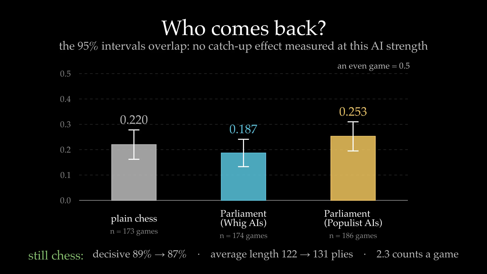

2 · The project
What is this?
Parliament Chess is chess with one new office: the crown. Halfway through a game you can call an election, and your own pieces vote on whether the crown should leave your King for another piece. It is a parody in the spirit of Rock Paper Scissors Lizard Spock: the chess is untouched, the politics are the joke, and the joke is balanced.
The idea
What if the King were an office rather than a piece? Every move stays FIDE chess, and after every election the board is still an ordinary chess position: one King a side, ordinary piece types. What changes is who wears the crown.
1. The Writ
From move 10, instead of moving, name a Candidate: any of your pieces except the King and the Queen, never crowned, not under attack. It costs your whole turn.
2. The campaign
Your opponent gets one move to answer: attack the Candidate’s square, capture your voters, or attack them so they abstain.
3. The count
Each voter backs whichever is nearer, Candidate or King. Pawns sit in the Commons; Knights, Bishops and Rooks in the College.
4. The Ledger
A dethroned King becomes a Pretender pawn that can promote only to Rook, Bishop or Knight. No piece reigns twice.
The College takes its shape from the Golden Bull of 1356, which fixed seven Prince-Electors, clergy and secular princes: Bishops are the clergy here, Knights and Rooks the lords. And because a voter backs whoever is nearer, gerrymandering is part of the game: your districts are where your pieces stand, and the enemy redraws them with every capture and every attack. Lab Report II compares the system with the other ways an election could have worked.
The film
Is it balanced?
Bots with three political styles (Whig, Populist, Monarchist) played each other in a census of 1,400 self-play games, through the same Orrery queue that later trained the net:

How it is built
| Part | What it is |
|---|---|
| The engine | PHP 8.2+, no dependencies: every rule of chess and of the election layer, the Ledger, notation (PCN), recordings. |
| The client | One canvas page: the board, the lobby, replays, the record, and the net’s mind drawn beside the board. |
| The bots | Book-Return Search: a shallow alpha-beta that leans on a SQLite book of every game it has seen. Three levels, three political styles. |
| The net | 1,203 binary sensors, 160 and 40 units, a value and a policy; trained on GPUs, generation by generation, by a fleet of machines. Its own page. |
| The fleet | An Orrery queue shared with other projects: labelling, training and gauntlet jobs, each verdict committed back to this repository. |
| A Rust labeller | The engine ported to Rust for the slowest job, checked against PHP on 1,218 positions with zero differences. |
The technical write-up walks through every part: How it works. A map of every file is in the contents.
The lab reports
Each step of the project has an IEEE-style lab report with its measurements, including the negative results: the series runs from the rules and their prior art, through balance, the AI and the fleet, to reading the net’s mind. The data behind them is in docs/data.
Every film
| Film | Length | What it shows |
|---|---|---|
| Parliament Chess | 91 s | The idea and the evidence, in Manim. |
| The player’s guide | 106 s | Your first game, on the real client. |
| How a neural net plays | 192 s | The champion net against Medium, with everything it computes. |
| The Net Reads the Classics | ~6 min | Six famous short games through the net’s eyes: what it would have played, measured. |